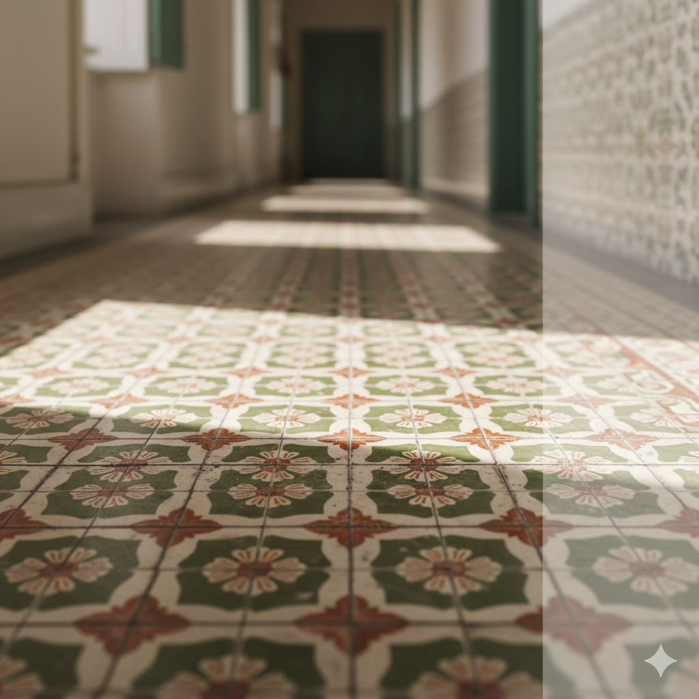

라벤더의 고요, 세이지의 균형
오래된 도감처럼, 그러나 오늘에 맞게. 자연의 향기를 공간에 머물게 하는 향의 예술.
허브 · 유리 · 빛. 조용히 집중되는 한 순간.
오래된 도감처럼, 그러나 오늘에 맞게. 자연의 향기를 공간에 머물게 하는 향의 예술.
빛에 비춰지는 허브의 잔향은 마치 오래된 기억처럼 조용히 머문다.
Apoteca Scala는 장인의 손끝에서 완성됩니다. 유리의 굴곡마다 담긴 세심한 손길이 향의 균형을 만들어냅니다.
허브에서 유리로, 다시 빛으로. 우리의 모든 제품은 자연의 순환을 닮아 있습니다.
Apoteca Scala 멤버십은 향의 여정을 함께 나누는 공간입니다.
당신의 일상에 향을 선물하세요. Apoteca Scala의 모든 향은 기억으로 남습니다.
빛과 그림자가 어우러지는 공간에서, 향은 또 다른 형태의 디자인이 됩니다.
Apoteca Scala의 모든 순간은 향으로 기록됩니다.
자연의 조화와 인간의 감각이 만나는 지점. 거기서 우리의 향이 시작됩니다.
Apoteca Scala는 이탈리아 약국 문화의 전통에서 영감을 받아, 감각과 의식의 현대적 균형을 추구합니다.
유리병 사이로 스며드는 빛은 향기의 본질을 드러냅니다.
Apoteca Scala의 철학은 오래된 약국의 가치와 현대적 감각의 조화에 있습니다.
모든 향은 정교하게 구성됩니다. 각각의 허브는 역할이 있고, 모든 향엔 이유가 있습니다.
하루의 시작과 끝을 잇는 작은 의식. 그것이 Apoteca Scala의 본질입니다.
우리의 향은 단순한 냄새가 아니라, 기억의 한 장면이 됩니다.
후각은 감정을 불러옵니다. 우리의 향은 당신의 일상에 감정을 불어넣습니다.
허브의 고요, 세이지의 균형. 자연의 향이 공간과 마음의 균형을 이룹니다.
Apoteca Scala의 향은 오늘의 의식을 완성합니다.